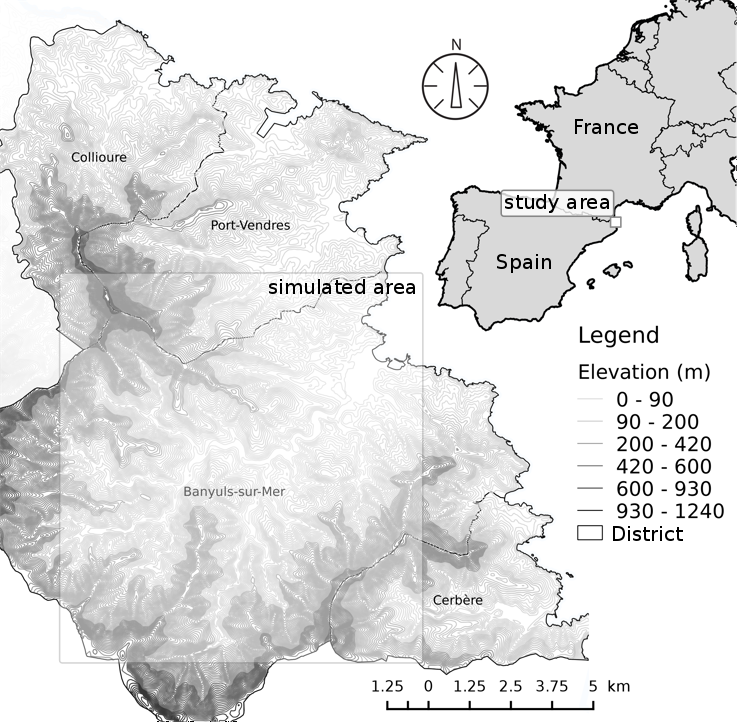
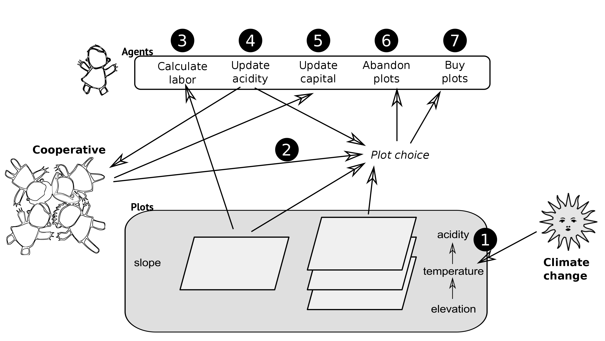
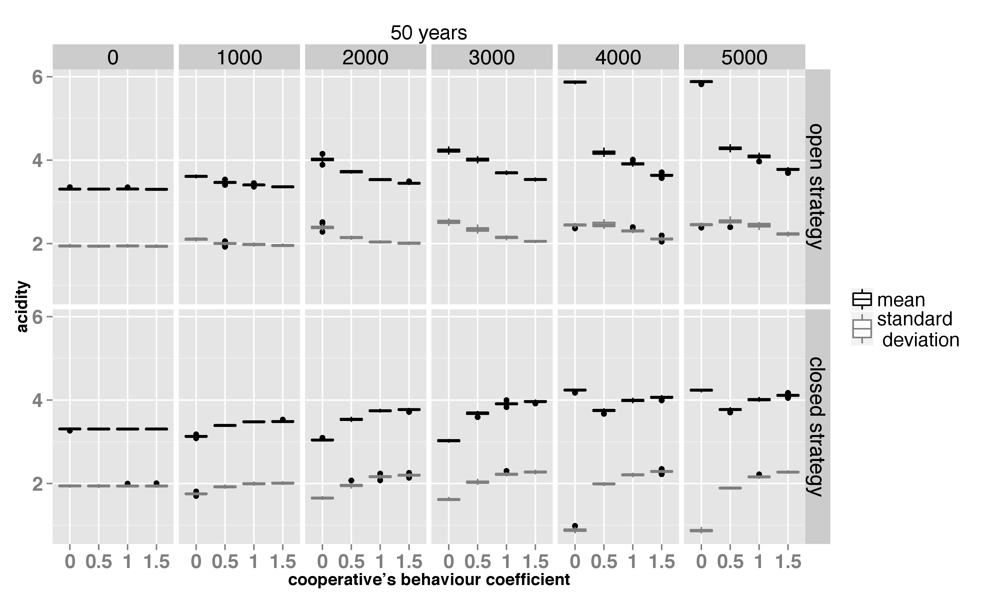
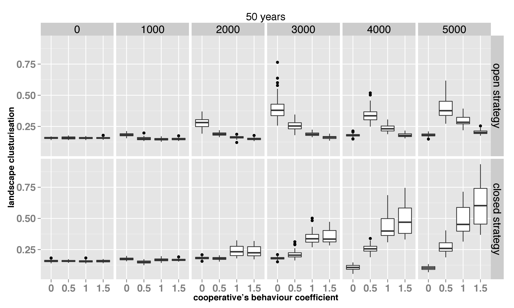
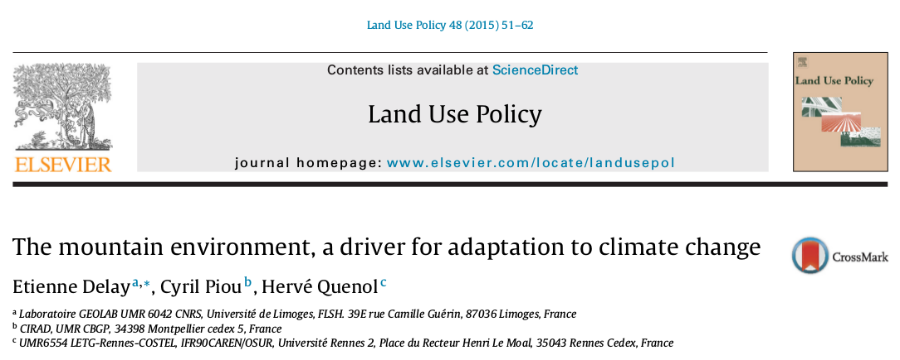
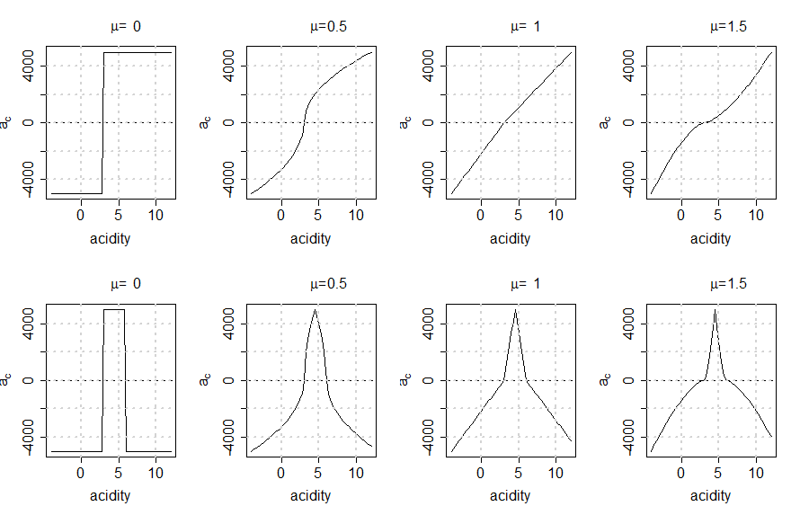
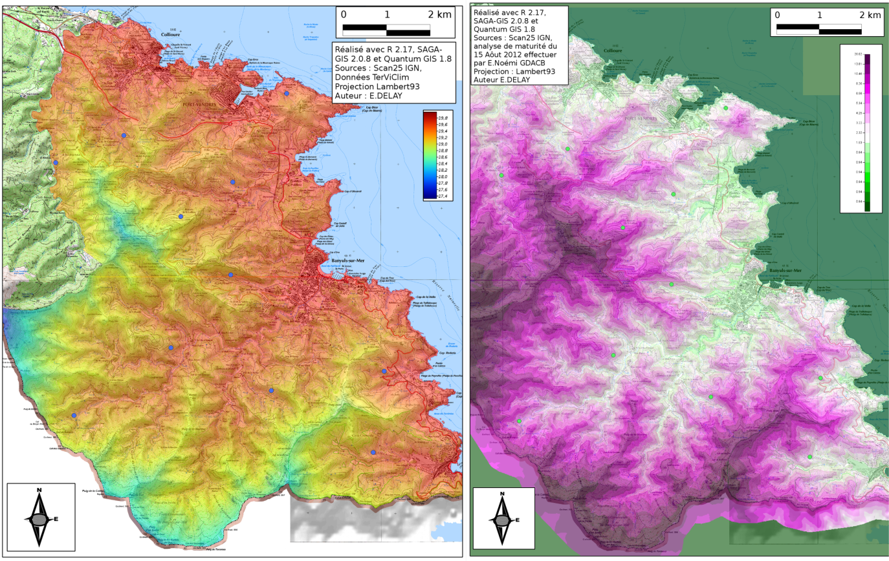

Cooperative winnery can be a major actor to adapt viticulture localy?
Delay E., Piou C., Quenol H. ClimWine -- 10-13 april 2016 -- Bordeaux
you said Agent Based Modeling (ABM)?
ABM : what is it ?
A change in modeling paradigm ! ok but when use it?
- local interactions
- individual variability
- adapation
So when :
- you can't resolve a problem by analytic way
- a phenomenon is nonlinear
Small exemple : flocking
Wilensky, U. (1998). NetLogo Flocking model. Center for Connected Learning and Computer-Based Modeling, Northwestern University, Evanston, IL.
ABM is for social sciences what Petri dish is for biology
crédit photo : Y tambe in wikimedia commonsWhat is COMMOD?
- posture based on a cycling approach
- actor are integred in the modeling proscess
- discussion of assumptions and feedbacks
- permanent confrontation of real and model processes to take into account uncertainty
Our case study: AcidityGIS
Explore the response of a territory to various cooperative incentives in the context of vine-growing and climate change.
Study area 1/2
Study area 2/2
| vineyard surface | 1300ha |
| winegrower | 680 |
| cooperator | 94% |
| Vineyard surface in coop. | 79% |
| Number of coop. | 3 |
Vinegrower and Companion Modelling
we work on socio-spacial vinegrower behavior, and different scenario with the cooperative in a iterative way.
- Work in focus-group (FC)
- ABM formalisation
- Critical workshop with FC
- ABM formalisation
- ...
AcidityGIS structure
With climate change, the temperature rise is expected to increase acidity since the total acidity is correlated with temperature (e.g. (see the works of Buttrose et al., 1971; Van Leeuwen et al., 2004; Sweetman et al., 2014, etc.)
Sensibility Analysis
With ABM, and COMMOD we deal with uncertainty... so our model is systematically explored with 1920 simulations
Some results
What happened with acidity ?
Target : 3 g × L−1 of sulfuric acid
Cooperative can influence different kind of landscape ?
Discussion/Conclusions
Lessons 1/2
- Cooperative policies can have impacts far more important on landscape and wine quality than climate change itself.
- Cooperative incentives can help in preparing to future problematic situations by anticipating the objective wine quality and driving vine-growers to use higher altitudes.
Lessons 2/2
- The trajectories are more interesting than specific results.
- Our model showed that the mountain can be perceived as an asset to adapt to climate change.
- Illustrates that for such territories, local stakeholders have their own capacity to take measures to anticipate and adapt to potential CC.
You want to find the complete story ?
Thank you for your Attention

{kind=link}
You can find this presentation on GitHub
realized with reveal.jsAppendix
Cooperative winnery behaviors
Grape ripening and space
Thanks TERVICLIM -- ADVICLIM program we have 11 temperature sensor in vinyards
